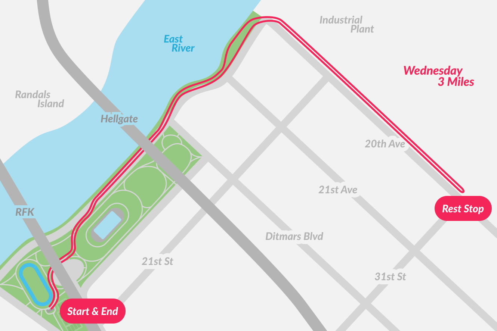
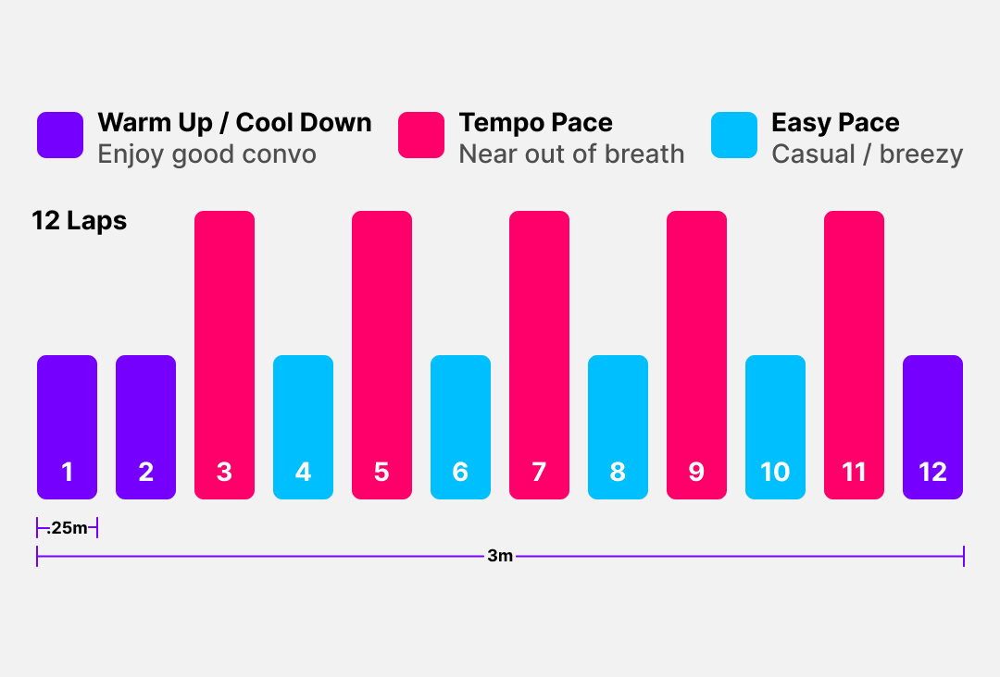

New year, new schedule! This month, interval runs will be on Fridays, and weekend runs will be on Sundays. See you there! #astoriarunners
Join us for a 5k run that starts and finishes at Astoria Park track. We have 3 pace groups and stop halfway to rest and socialize before heading back to the park.
Join us for a 45-minute interval run at the Astoria Park track. We meet afterwards in the corner of the inner field to chat. (Feel free to join us and run however you want)
Astoria Runners is about building community through running. We organize weekly runs, group participation in organized races, and other activities. Started in 2016, we are a safe place for Astorians to come and have a bit of exersise and socialization. We see ourselves as a social group that runs.
What day is the long run? Weekend runs will switch from Saturday to Sunday every three months. Please check the current schedule at the top of the page.
How fast do yall go?Our pace is generally around 9:30-10:30 min miles. However, all levels of experience and all paces are welcome. We pause at the halfway point and make sure no one is left behind. Our weekend runs are 6-13 miles at a 9:30-10:30 pace, and pace varies based on the runners present. Meeting points throughout long run routes ensure folks can choose their own speed and stay with the group. Walking intervals are frequently employed at long runs.
Where do you meet? We meet at the benches in front of the restrooms by the Astoria Park Track.
{kind=link}
{kind=link}